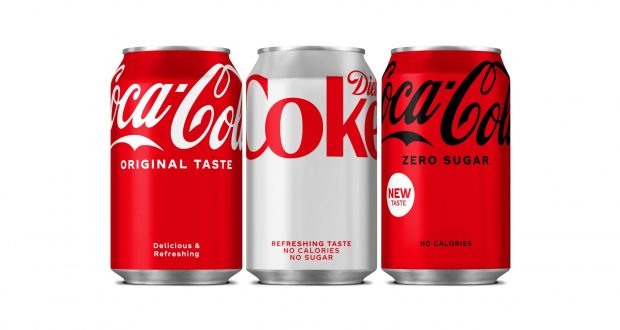

Coca-Cola, or Coke, is a carbonated soft drink manufactured by the Coca-Cola Company . In 2013, Coke products were sold in over 200 countries worldwide, with consumers drinking more than 1.8 billion company beverage servings each day.Coca-Cola ranked No. 87 in the 2018 Fortune 500 list of the largest United States corporations by total revenue. Based on Interbrand's "best global brand" study of 2020, Coca-Cola was the world's sixth most valuable brand.Coca-Cola was the world's sixth most valuable brand.The name refers to two of its original ingredients: coca leaves and kola nuts (a source of caffeine). The current formula of Coca-Cola remains a trade secret; however, a variety of reported recipes and experimental recreations have been published. The secrecy around the formula has been used by Coca-Cola in its marketing as only a handful of anonymous employees know the formula. The drink has inspired imitators and created a whole classification of soft drink: colas.
The Coca-Cola Company produces concentrate, which is then sold to licensed Coca-Cola bottlers throughout the world. The bottlers, who hold exclusive territory contracts with the company, produce the finished product in cans and bottles from the concentrate, in combination with filtered water and sweeteners. A typical 12-US-fluid-ounce (350 ml) can contains 38 grams (1.3 oz) of sugar (usually in the form of high-fructose corn syrup in North America). The bottlers then sell, distribute, and merchandise Coca-Cola to retail stores, restaurants, and vending machines throughout the world. The Coca-Cola Company also sells concentrate for soda fountains of major restaurants and foodservice distributors.
The Coca-Cola Company has on occasion introduced other cola drinks under the Coke name. The most common of these is Diet Coke, along with others including Caffeine-Free Coca-Cola, Diet Coke Caffeine-Free, Coca-Cola Zero Sugar, Coca-Cola Cherry, Coca-Cola Vanilla, and special versions with lemon, lime, and coffee. Coca-Cola was called Coca-Cola Classic from July 1985 to 2009, to distinguish it from "New Coke".
BACK TO TOP